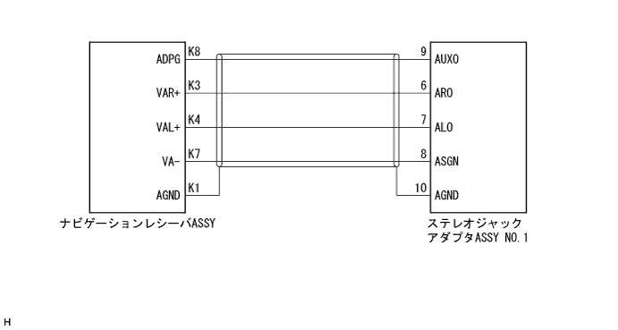

HDD Navigation System No Sound Output from Device Connected to AUX Terminal |

| Step 1 | Inspect Wire Harness and Connector (Navigation Receiver Assembly - Stereo Jack Adapter Assembly NO.1) |
Pre-inspection Preparation
Disconnect connector K of the navigation receiver assembly.
Disconnect the stereo jack adapter assembly NO.1 connector.
Resistance Inspection
Using SST (Toyota electrical tester), measure the resistance between the connector terminals of the vehicle wire harness between the navigation receiver assembly and stereo jack adapter assembly NO.1.
| Tester Connection (Terminal Symbol) | Condition | Standard |
|---|---|---|
| K8(ADPG) - 9(AUXO) | Always | Below 1 Ω |
| K3(VAR+) - 6(ARO) | Always | Below 1 Ω |
| K4(VAL+) - 7(ALO) | Always | Below 1 Ω |
| K7(VA-) - 8(ASGN) | Always | Below 1 Ω |
| K1(AGND) - 10(AGND) | Always | Below 1 Ω |
Using SST (Toyota electrical tester), measure the resistance between each connector terminal of the navigation receiver assembly vehicle side wire harness and body ground.
| Tester Connection (Terminal Symbol) | Condition | Standard |
|---|---|---|
| K8 (ADPG) - Body ground | Always | 10 kΩ or higher |
| K3 (VAR+) - Body ground | Always | 10 kΩ or higher |
| K4 (VAL+) - Body ground | Always | 10 kΩ or higher |
| K7 (VA-) - Body ground | Always | 10 kΩ or higher |
| K1 (AGND) - Body ground | Always | 10 kΩ or higher |
|
| ||||
| OK | |
| Step 2 | Replace Stereo Jack Adapter Assembly NO.1 |
Stereo Jack Adapter Assembly NO.1 Swap Inspection
Prepare a new stereo jack adapter assembly NO.1 and replace it. (see)
Check if the malfunction recurs.
| Result | Proceed to |
|---|---|
| Returns to normal | A |
| Malfunction recurs | B |
|
| ||||
| A | ||
| ||